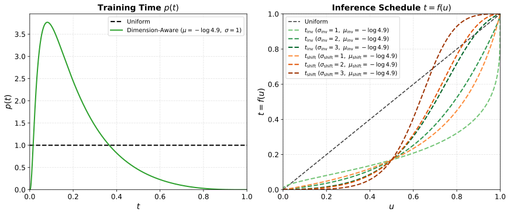
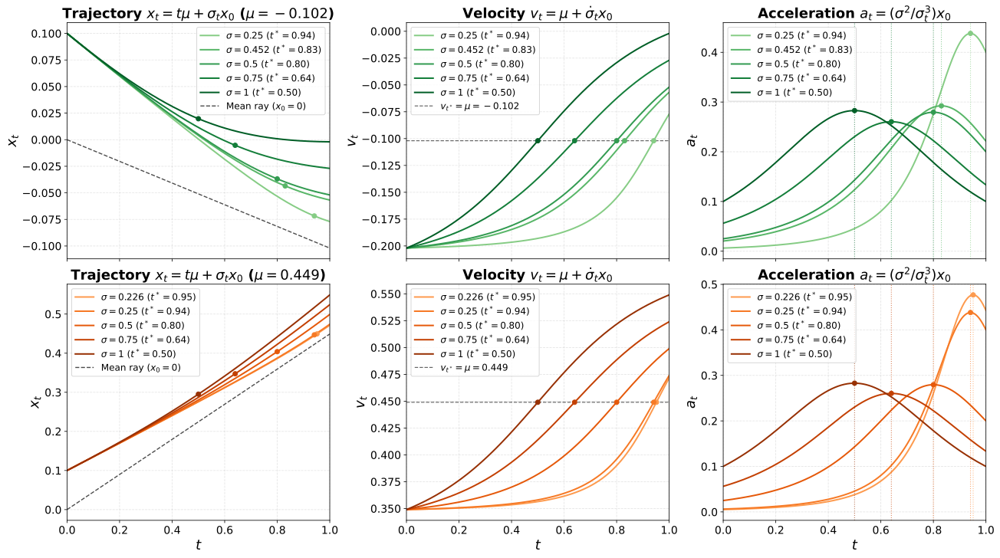
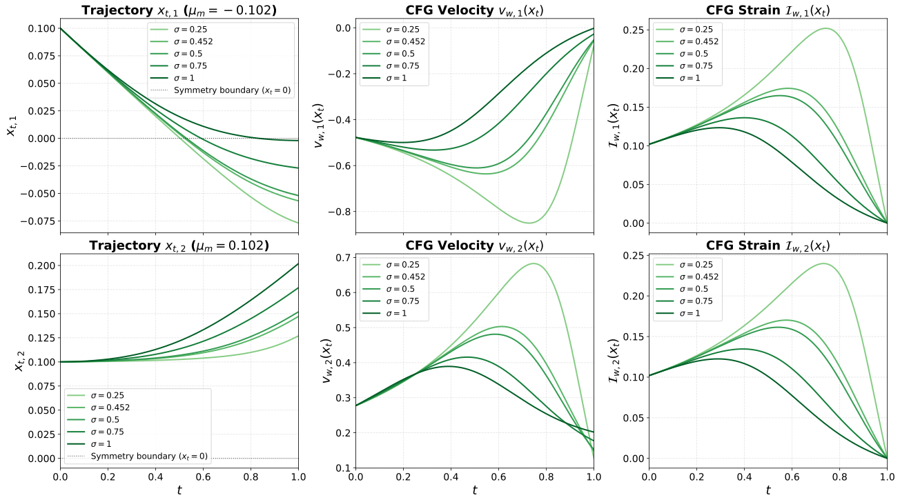
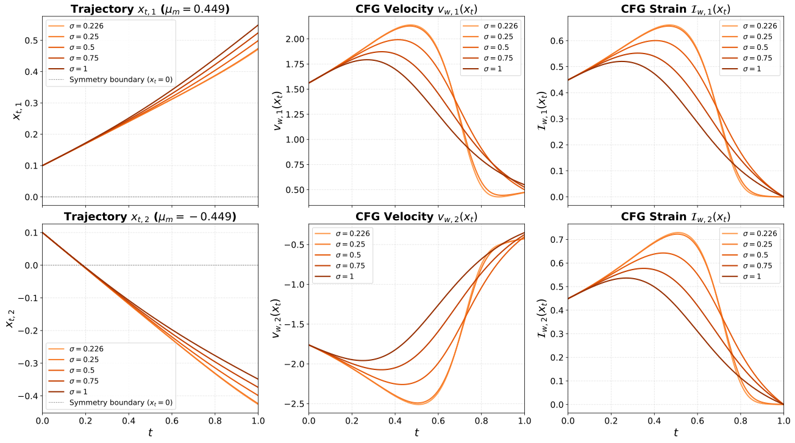
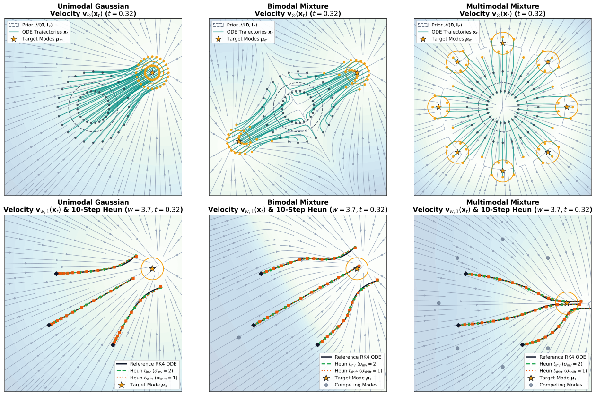

Recent state-of-the-art methods apply a non-uniform logit-normal distribution for training and an empirical time-shifting schedule for inference. This time-shifting strategy is empirically effective for image generation in a few steps. However, the continuous training time PDF $p(t)$ and the discrete inference schedule $\{t_k\}_{k=0}^N$ have largely been treated as decoupled hyperparameters. In this report, we bridge this theoretical gap by coupling the inference integration schedule to the training time distribution.
To align numerical integration with $p(t)$, we introduce a uniform computational clock $u \in [0, 1]$ and map it to time $t$ via a strictly monotonic function $t = f(u)$ defined by the Cumulative Distribution Function (CDF) $F(t)$
Table 1 and Figure 1 summarize training time $p(t)$. During training, time points are sampled via $t \sim p(t)$; during inference, a uniform grid $u_k = \frac{k}{N}$ is mapped to time steps $t_k = f(u_k)$ with step size $\Delta t_k = t_{k+1} - t_k = f(u_{k+1}) - f(u_k)$.
Table 1: The training time probability density function $p(t)$, inverse-density scaling $t_{\text{inv}}(u) = f(u)$, and empirical time-shifting $t_{\text{shift}}(u)$.
| Distribution | $p(t)$ | $t_{\text{inv}}(u) = f(u)$ | $t_{\text{shift}}(u)$ |
|---|---|---|---|
| Uniform | $1$ | $u$ | $u$ |
| Logit-Normal | $\frac{1}{\sigma t(1-t)} \phi\left(\frac{\text{logit}(t) - \mu}{\sigma}\right)$ | $\text{sigmoid}\Big(\sigma \Phi^{-1}(u) + \mu \Big)$ | $\text{sigmoid}\Big(\sigma \text{logit}(u) + \mu \Big)$ |
| Dimension-Aware | $\frac{1}{\sigma t(1-t)} \phi\left(\frac{\text{logit}(t) + \log s}{\sigma}\right)$ | $\text{sigmoid}\Big(\sigma \Phi^{-1}(u) - \log s\Big)$ | $\text{sigmoid}\Big(\sigma \text{logit}(u) - \log s\Big)$ |

Figure 1: Training time $p(t)$ and inference schedule $t = f(u)$. Left: Comparison between the uniform density and the dimension-aware logit-normal density ($s = 4.9, \sigma = 1$). Right: Comparison of the uniform schedule ($t = u$), the inverse-desnsity scaling schedule $t_{\mathrm{inv}}(u) = \operatorname{sigmoid}(\sigma_{\mathrm{inv}} \Phi^{-1}(u) + \mu_{\mathrm{inv}})$, and the empirical time-shifting schedule $t_{\mathrm{shift}}(u) = \operatorname{sigmoid}(\sigma_{\mathrm{shift}} \operatorname{logit}(u) + \mu_{\mathrm{shift}})$ across $\sigma_{\mathrm{inv}} \in \{1, 2, 3\}$ and $\sigma_{\mathrm{shift}} \in \{1, 2, 3\}$ with fixed $\mu_{\mathrm{inv}} = \mu_{\mathrm{shift}} = -\log 4.9$.
Inverse-Density Scaling vs. Empirical Time-Shifting. Exact CDF inversion of the logit-normal distribution (Table 1) maps $u \in (0, 1)$ through $\Phi^{-1}(u)$
State-of-the-art flow matching models warp $u \in (0, 1)$ using $\text{logit}(u) = \log\frac{u}{1-u}$
Classifier-Free Guidance. During inference with CFG , the velocity field $\mathbf{v}_w(\mathbf{x}_{t})$ extrapolates between the conditional prediction $\mathbf{v}_c(\mathbf{x}_{t}) = \mathbf{v}_\theta(\mathbf{x}_{t} \mid \mathbf{c})$ and the unconditional prediction $\mathbf{v}_\emptyset(\mathbf{x}_{t}) = \mathbf{v}_\theta(\mathbf{x}_{t} \mid \emptyset)$ with guidance scale $w \ge 1$
Eq. 1 can be rewritten as
We introduce a guidance strain indicator ($\mathcal{I}_{w}$) to investigate how CFG works. $\mathcal{I}_{w}(t_k)$ quantifies the magnitude of the repulsive extrapolation vector injected at step $t_k$
We consider transporting a standard isotropic Gaussian prior $p_0(\mathbf{x}) = \mathcal{N}(\mathbf{x}; \mathbf{0}, \mathbf{I}_d)$ into an isotropic Gaussian target distribution $p_1(\mathbf{x}) = p_{\mathrm{data}}(\mathbf{x}) = \mathcal{N}(\mathbf{x}; \boldsymbol{\mu}, \sigma^2\mathbf{I}_d)$, where $\boldsymbol{\mu} \in \mathbb{R}^d$ and $\sigma > 0$. $\mathbf{x}_t$ follows the distribution $p_t(\mathbf{x}) = \mathcal{N}(\mathbf{x}; \boldsymbol{\mu}_t, \sigma_t^2\mathbf{I}_d)$, where $\boldsymbol{\mu}_t = t\boldsymbol{\mu}$ and $\sigma_t^2 = (1-t)^2 + t^2\sigma^2$, whose time derivatives satisfy $\dot{\boldsymbol{\mu}}_t = \boldsymbol{\mu}$ and $ \sigma_t\dot{\sigma}_t = t(1+\sigma^2) - 1$. Differentiating $\mathbf{x}_t$ with respect to $t$ and substituting $\mathbf{x}_0 = \frac{\mathbf{x}_t - t\mathbf{x}_1}{1-t}$ yields $\mathbf{v}(\mathbf{x}_t \mid \mathbf{x}_1) = \frac{d \mathbf{x}_t}{dt} = \mathbf{x}_1 - \mathbf{x}_0 = \frac{\mathbf{x}_1 - \mathbf{x}_t}{1 - t}$. The corresponding marginal velocity field is obtained by
Since $\mathbf{x}_1$ and $\mathbf{x}_t$ are jointly Gaussian with $\operatorname{Cov}(\mathbf{x}_1, \mathbf{x}_t) = t\sigma^2\mathbf{I}_d$ and $\operatorname{Cov}(\mathbf{x}_t) = \sigma_t^2\mathbf{I}_d$, applying the Gaussian conditioning formula to $\mathbb{E}[\mathbf{x}_1 \mid \mathbf{x}_t]$ gives
Substituting $\mathbb{E}[\mathbf{x}_1 \mid \mathbf{x}_t]$ into Eq. 8 gives
Given $\dot{\mathbf{x}}_t = \mathbf{v}(\mathbf{x}_t)$, we obtain $\frac{d}{dt}(\mathbf{x}_t - \boldsymbol{\mu}_t) = \frac{\dot{\sigma}_t}{\sigma_t}(\mathbf{x}_t - \boldsymbol{\mu}_t)$. Applying the quotient rule yields
Integrating from $0$ to $t$ and using $\boldsymbol{\mu}_0 = \mathbf{0}$ and $\sigma_0 = 1$ gives $\frac{\mathbf{x}_t - \boldsymbol{\mu}_t}{\sigma_t} = \frac{\mathbf{x}_0 - \boldsymbol{\mu}_0}{\sigma_0} = \mathbf{x}_0$ and
Differentiating $\mathbf{x}_t$ with respect to $t$ yields
Integrating $\dot{\mathbf{x}}_t$ over $t \in [0, 1]$ confirms that Eq. 1 recovers the target distribution without bias
Differentiating Eq. 13 gives $\ddot{\mathbf{x}}_t = \ddot{\sigma}_t\mathbf{x}_0$. Applying the quotient rule to $\dot{\sigma}_t = \frac{t(1+\sigma^2)-1}{\sigma_t}$ and substituting $\sigma_t^2 = (1-t)^2 + t^2\sigma^2$ yields
Although individual conditional paths $\mathbf{x}_t = (1 - t)\mathbf{x}_0 + t\mathbf{x}_1$ are straight lines, the deterministic probability flow ODE trajectories $\mathbf{x}_t$ in Eq. 12 have zero acceleration ($\ddot{\mathbf{x}}_t = \mathbf{0}$) if and only if $\mathbf{x}_0 = \mathbf{0}$ (the mean ray), or asymptotically on $[0, 1)$ in the limit $\sigma \to 0$

Figure 2: The unimodal Gaussian flow dynamics: trajectory $x_t = t\mu + \sigma_t x_0$ (left), velocity $v_t = \mu + \dot{\sigma}_t x_0$ (middle), and acceleration $a_t = (\sigma^2 / \sigma_t^3) x_0$ (right) for initial state $x_0 = 0.1$. Top row: $\mu = -0.102$ with $\sigma \in \{0.25, 0.452, 0.5, 0.75, 1\}$. Bottom row: $\mu = 0.449$ with $\sigma \in \{0.226, 0.25, 0.5, 0.75, 1\}$.
By symmetry, the competing mode probability is $\gamma_2(\mathbf{x}_t) = \mathrm{P}(m=2 \mid \mathbf{x}_t) = 1 - \gamma_1(\mathbf{x}_t) = \text{sigmoid}\!\big(-\frac{2t\,\boldsymbol{\mu}^\top \mathbf{x}_t}{\sigma_t^2}\big)$. Their difference between $\gamma_1(\mathbf{x}_t)$ and $\gamma_2(\mathbf{x}_t)$ is
From the unimodal results, the exact class-conditional trajectories and velocities for modes $m = 1$ ($+\boldsymbol{\mu}$) and $m = 2$ ($-\boldsymbol{\mu}$) starting from $\mathbf{x}_0 \in \mathbb{R}^d$ are
The two class-conditional velocity fields at an arbitrary state $\mathbf{x}_t$ are
The sum and difference of the two class-conditional velocities take the forms
Decomposing $\mathbf{v}_\emptyset(\mathbf{x}_t) = \gamma_1(\mathbf{x}_t)\mathbf{v}_1(\mathbf{x}_t) + \gamma_2(\mathbf{x}_t)\mathbf{v}_2(\mathbf{x}_t)$ into symmetric and antisymmetric parts and substituting Eqs. 20 and 23 yields
When conditioning on mode $m \in \{1, 2\}$ with guidance weight $w \ge 1$, the CFG velocity field is $\mathbf{v}_{w,m}(\mathbf{x}_t) = \mathbf{v}_m(\mathbf{x}_t) + (w - 1)\big(\mathbf{v}_m(\mathbf{x}_t) - \mathbf{v}_\emptyset(\mathbf{x}_t)\big)$. Using $\gamma_1(\mathbf{x}_t) + \gamma_2(\mathbf{x}_t) = 1$, the velocity discrepancy $\mathbf{v}_m(\mathbf{x}_t) - \mathbf{v}_\emptyset(\mathbf{x}_t)$ is given by
Substituting Eqs. 22 and 25-- 27 into Eqs. 5 and 7 yields the exact CFG-guided velocity fields and guidance strains for modes $m = 1$ and $m = 2$
Equations 29-- 32 provide an analytical explanation of how CFG steers trajectories across modes

Figure 3: Bimodal Gaussian flow dynamics with target mode $\mu_m = -0.102$ (top row) and $\mu_m = 0.102$ (bottom row) with $\sigma \in \{0.25, 0.452, 0.5, 0.75, 1\}$.

Figure 4: Bimodal Gaussian flow dynamics with target mode $\mu_m = 0.449$ (top row) and $\mu_m = -0.449$ (bottom row) with $\sigma \in \{0.226, 0.25, 0.5, 0.75, 1\}$.
Let the data distribution be an $M$-component isotropic Gaussian Mixture Model (GMM), $ p_{\text{data}}(\mathbf{x}) = \sum_{m=1}^{M} \pi_m \mathcal{N}\big(\mathbf{x}; \boldsymbol{\mu}_m, \sigma_m^2 \mathbf{I}_d\big), \sum_{m=1}^{M} \pi_m = 1$, where $m = \{1, \dots, M\}$. The marginal distribution at time $t \in [0, 1]$ is given by $ p_t(\mathbf{x}) = \sum_{m=1}^{M} \pi_m \mathcal{N}\big(\mathbf{x}; t\boldsymbol{\mu}_m, \sigma_{t,m}^2 \mathbf{I}_d\big), \sigma_{t,m}^2 = (1-t)^2 + t^2\sigma_m^2$. Conditioned on class $m$, the conditional trajectory is $\mathbf{x}_{m,t} = t\boldsymbol{\mu}_m + \sigma_{t,m}\mathbf{x}_0$, and the conditional velocity is $ \mathbf{v}_m(\mathbf{x}_t) = \boldsymbol{\mu}_m + \frac{\dot{\sigma}_{t,m}}{\sigma_{t,m}}\left(\mathbf{x}_t - t\boldsymbol{\mu}_m\right)$. The exact unconditional velocity $\mathbf{v}_\emptyset(\mathbf{x}_t) = \mathbb{E}[\mathbf{x}_{1} - \mathbf{x}_{0} \mid \mathbf{x}_{t}]$ is the softmax posterior-weighted average over all $M$ modes
Using $\sum_{j=1}^M \gamma_j(\mathbf{x}_t) = 1$, the discrepancy between the conditional velocity $\mathbf{v}_m(\mathbf{x}_t)$ and the unconditional velocity $\mathbf{v}_\emptyset(\mathbf{x}_t)$ is
Substituting Eq. 34 into Eqs. 5 and 7 for target class $m$ yields the exact guided velocity field $\mathbf{v}_{w,m}(\mathbf{x}_t)$ and guidance strain $\mathcal{I}_{w,m}(\mathbf{x}_t)$
In the homoscedastic case where all components share equal variance $\sigma_m = \sigma$ ($\sigma_{t,m}^2 = \sigma_t^2 = (1-t)^2 + t^2\sigma^2$), the spatial state $\mathbf{x}_t$ cancels from each pairwise velocity difference $\mathbf{v}_m(\mathbf{x}_t) - \mathbf{v}_j(\mathbf{x}_t) = \left(1 - t\frac{\dot{\sigma}_t}{\sigma_t}\right)(\boldsymbol{\mu}_m - \boldsymbol{\mu}_j)$, simplifying Eqs. 35-- 36 to

Figure 5: Visualization of unconditional vector fields, CFG vector fields, and guided ODE sampling trajectories. Top row: Unconditional vector fields $\mathbf{v}_\emptyset(\mathbf{x}_t)$ at $t = 0.32$ showing prior distributions $\mathcal{N}(0, I)$, ODE trajectories, and target modes $\boldsymbol{\mu}_m$. Bottom row: CFG flow $\mathbf{v}_{w,1}(\mathbf{x}_t)$ with 10-step Heun solvers comparing reference RK4 ODE trajectories against various sampling schedules ($t_{\mathrm{inv}}$, $t_{\mathrm{shift}}$) and hyperparameters ($\sigma_{\mathrm{inv}}$, $\sigma_{\mathrm{shift}}$).
Table 2: Quantitative comparison of sampling schedules on the 2D 8-mode GMM benchmark ($N = 10$ Heun steps, $w = 3.7$, $s = 4.9$). Best results are highlighted in bold.
| Schedule | Trajectory Error $\|\hat{\mathbf{x}}_N - \mathbf{x}^*\|_2$ ($\downarrow$) | MAE $ \|\hat{\mathbf{x}}_N - \mathbf{x}^*\|_1$ ($\downarrow$) |
|---|---|---|
| Uniform ($t = u$) | $0.0284 \pm 0.0078$ | $0.0176 \pm 0.0054$ |
| $t_{\mathrm{shift}}$ ($\sigma_{\mathrm{shift}} = 3$) | $0.0954 \pm 0.0209$ | $0.0519 \pm 0.0134$ |
| $t_{\mathrm{shift}}$ ($\sigma_{\mathrm{shift}} = 2$) | $0.0531 \pm 0.0073$ | $0.0295 \pm 0.0048$ |
| $t_{\mathrm{shift}}$ ($\sigma_{\mathrm{shift}} = 1$) | $0.0378 \pm 0.0121$ | $0.0202 \pm 0.0071$ |
| $t_{\mathrm{inv}}$ ($\sigma_{\mathrm{inv}} = 3$) | $0.0459 \pm 0.0065$ | $0.0257 \pm 0.0042$ |
| $t_{\mathrm{inv}}$ ($\sigma_{\mathrm{inv}} = 2$) | $\mathbf{0.0082 \pm 0.0033}$ | $\mathbf{0.0048 \pm 0.0017}$ |
| $t_{\mathrm{inv}}$ ($\sigma_{\mathrm{inv}} = 1$) | $0.0666 \pm 0.0278$ | $0.0415 \pm 0.0175$ |
To verify whether the dynamical trade-offs identified in our analytical Gaussian and GMM studies generalize to large-scale high-dimensional generation, we evaluate inference time-scheduling across dispersion scales $\sigma_\text{inv} \in \{1, 2, 3\}$ on RiT (Representation Diffusion Transformer) .
RiT trains a vanilla Diffusion Transformer in standardized DINOv2 representation space using clean data prediction, a dimension-aware time shift ($s = 4.9$), and a joint [CLS]-patch alignment objective.
Table 3: Quantitative comparison of sampling schedules on RiT across different $\sigma_{\text{inv}}$ scalings ($w = 3.7$, $s = 4.9$). Best results are highlighted in bold.
| Inference Schedule | FID ($\downarrow$) | IS ($\uparrow$) |
|---|---|---|
| $w = 3.7, \sigma_{\text{shift}} = 1$, Baseline | 1.3023 | 296.4935 |
| $w = 3.7, \sigma_{\text{inv}} = 3$ | 1.3910 | 290.8568 |
| $w = 3.7, \sigma_{\text{inv}} = 2$ | 1.2425 | 308.0255 |
| $w = 3.7, \sigma_{\text{inv}} = 1$ | 2.2331 | 308.4232 |
@misc{xie2026AUC,
title={Analyzing Inference Schedules of Flow Matching},
author={Jingren Xie},
year={2026},
url={https://zekifayes.github.io/fmts}
}